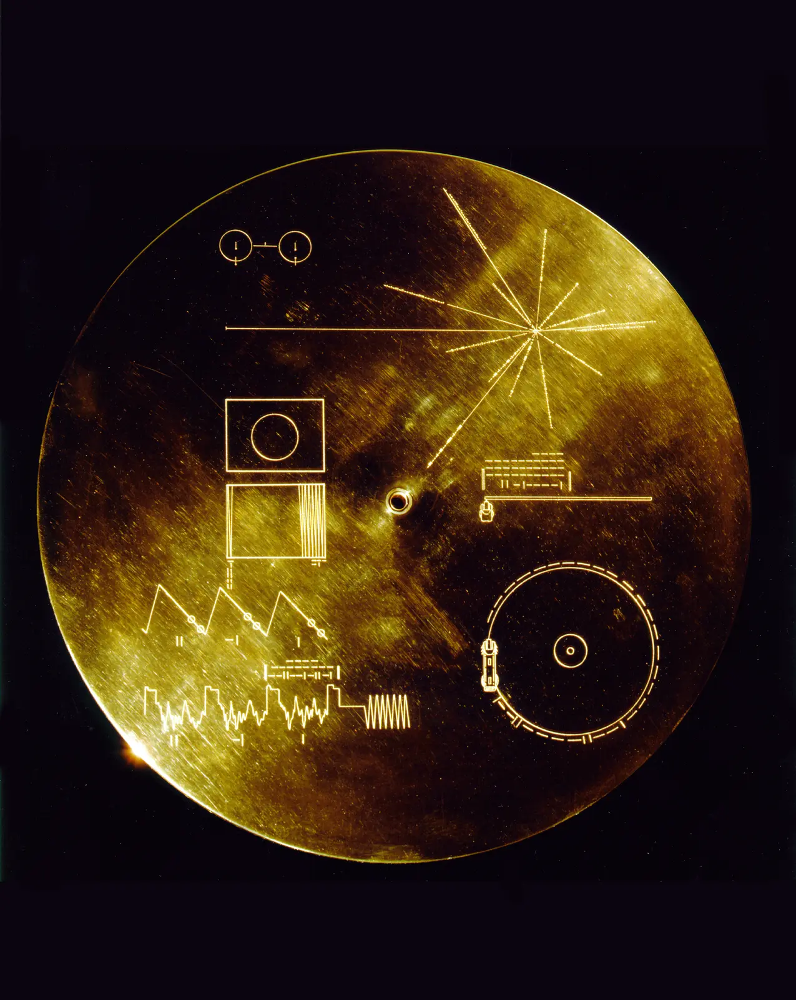
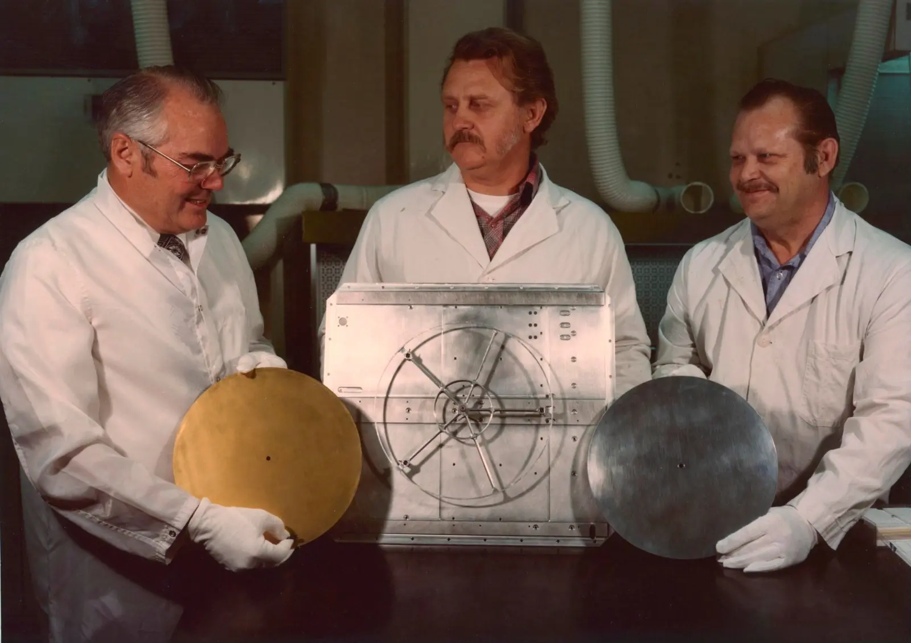
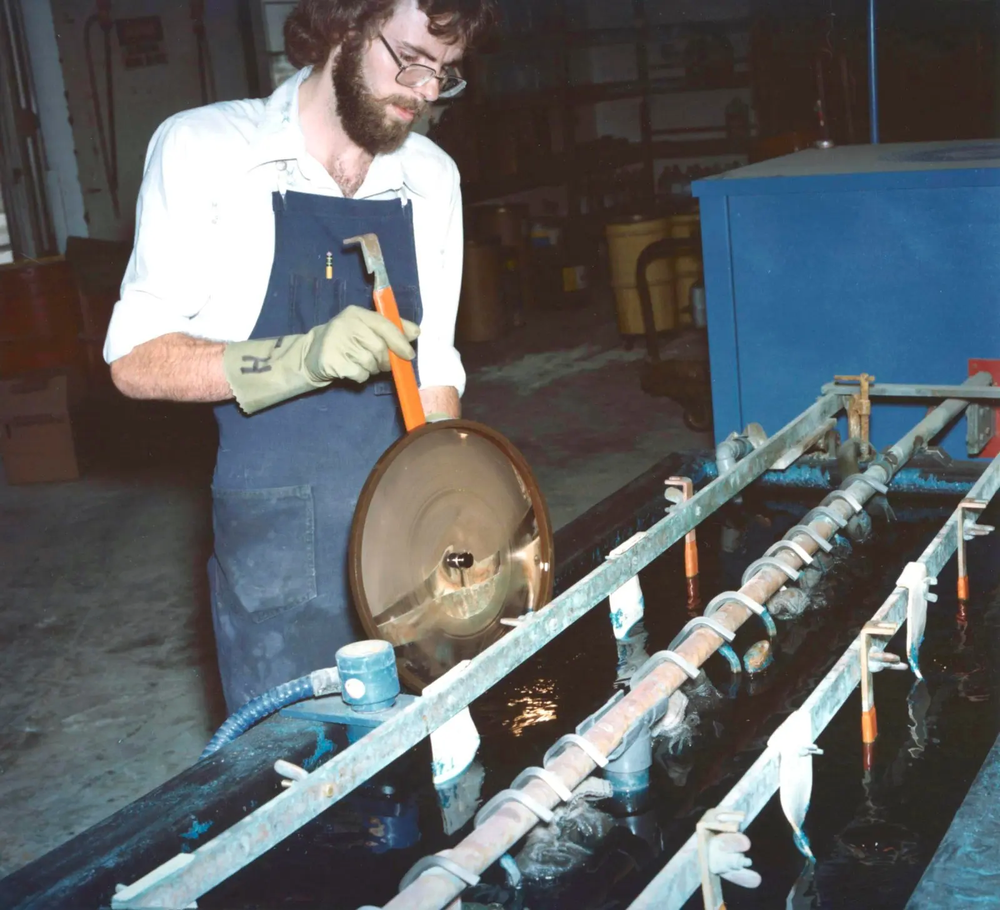

Space Science · Lesson 05 · SETI
Searching for Extraterrestrial Intelligence
Five connected stories about listening for technology beyond Earth, sending messages outward, and asking what the silence can — and cannot — tell us.
Searches test radio, optical, and other data for technosignatures. The Wow! Signal is an unconfirmed historical candidate.
Arecibo was a deliberate transmission, often called METI or active SETI. Voyager carries a passive artifact. Neither is a detection.
Message Decoder
InteractiveClick or hover any region to identify it
How the bits traveled
Frequency shiftBoth binary states were transmitted. A 1 was not a pulse and a 0 was not silence; the transmitter shifted between two closely spaced frequencies.
A message still in transit
The transmission is only about 0.2% of the way to M13's present distance. Stars in the cluster will have moved before the beam reaches that region.
Binary Primer
How it worksThe message contains 1679 bits. Each bit was encoded by shifting a continuous radio carrier between two frequencies about 10 Hz apart. Because 1679 factors into 23 × 73, a receiver could try those two rectangular orientations; one produces the intended pictorial arrangement, conventionally shown as 73 rows × 23 columns.
| Decimal | Binary | Decimal | Binary |
|---|---|---|---|
| 1 | 1 | 6 | 110 |
| 2 | 10 | 7 | 111 |
| 3 | 11 | 8 | 1000 |
| 4 | 100 | 9 | 1001 |
| 5 | 101 | 10 | 1010 |
Signal Viewer
InteractiveHover over bars to see intensity values
The chart recreates the six measurements represented by 6EQUJ5. They rose to roughly 30.5 standard deviations above Big Ear's running baseline and fell over six 12-second reporting intervals. The narrowband signal was detected near the neutral-hydrogen line around 1420 MHz, but its origin was never established.
What the printout looked like
Reconstruction1 1 1 2 1 1 0 1 1 1 1 1 1 2 1 6 1 1 1 1 1 1 1 1 1 E 1 1 1 2 2 1 1 1 1 Q 1 1 1 1 1 1 2 1 1 U 1 1 1 1 ← Wow! 1 1 1 1 1 J 1 2 1 1 1 2 1 1 1 5 1 1 1 1
The famous characters were printed vertically in one 10 kHz-wide frequency channel. They are measurement codes, not a six-character alien message.
Why 72 seconds?
The match to the telescope's beam shape made the event interesting, but 72 seconds is the observing window—not proof that the source itself transmitted for exactly 72 seconds. Big Ear's second horn did not detect it a few minutes later.
The “6EQUJ5” Explained
NotationBig Ear compressed each measurement into one character. Digits and letters represent ranges of standard deviations above a running baseline; they are not exact raw power values:
| Character | Intensity | Character | Intensity |
|---|---|---|---|
| 6 | 6 to <7 σ | U | 30 to <31 σ |
| E | 14 to <15 σ | J | 19 to <20 σ |
| Q | 26 to <27 σ | 5 | 5 to <6 σ |

A portrait of a planet
Each Voyager carries a 12-inch gold-plated copper record selected to portray life and culture on Earth. It combines analog pictures, greetings, natural and human-made sounds, and music from many places and eras.
The record is both a message for a possible finder and a mirror for us: a small team had to decide what one planet should say about itself.
Open the Earth archive
Interactive exhibitEarth in 115 pictures
The sequence moves from mathematical and physical definitions to the Solar System, DNA and life, people, landscapes, food, work, buildings, transportation, and music. Copyright prevents reproducing most original frames here, so this classroom exhibit shows NASA mission photographs and age-appropriate summaries of the image themes.


Numbers, units, chemistry, and a calibration circle try to build a shared scientific vocabulary.
The Sun, planets, Earth, and a pulsar map place our home in a much larger universe.
DNA, cells, anatomy, growth, families, animals, and plants present living systems.
Children, families, meals, learning, art, and communities show cooperation and relationship.
Farming, craft, construction, factories, travel, and telescopes show people changing their world.
Mountains, forests, shores, deserts, weather, and wildlife show Earth's variety.
The record stores picture information as a changing analog signal, not as a JPEG or pixel file.
A 90-minute world playlist
The 27 selections cross concert halls, ceremonies, work, dance, storytelling, and popular music. These twelve stops show the breadth of the route; they are not a ranking and cannot stand for every tradition within a country or region.
One planet, many voices
Linda Salzman Sagan organized brief greetings in 55 languages. The speakers were mostly found through Cornell University and nearby communities under a tight deadline, so the set is broad but not complete. Choose a language to hear its original voice and read its English translation.
Play the complete 4:25 sequence, or choose one of the chapter buttons below to jump to that greeting.
The original record carries each greeting as a voice recording. Translations follow NASA's transcript; wording reflects a quickly assembled 1977 project.
The story of Earth, told in sound
Before the music begins, a montage travels from geology and weather into animals and human life. Imagine the sequence as a sound-only documentary: what could a listener infer without seeing the source?
Decode the cover
DiagramA time capsule with a point of view
- 📅The record captures choices made in 1977, not a complete or neutral portrait of humanity.
- 🌎The team sought global range, but time, access, copyright, and the curators' own knowledge shaped what was included.
- 🎵European concert music receives several slots, while enormous regions and many living traditions are represented by one selection or none.
- 🗣️Some catalog labels use terms common in 1977 that communities may describe differently today. This exhibit uses current place and people names where possible.
- 🤔Media literacy: every archive tells two stories—the story in its contents and the story of who chose them.
Design a 2026 Golden Record
CreateSources and image credits
Drake Equation Calculator
InteractiveThese are labeled examples, not consensus forecasts. Select one to reveal all seven assumptions, then change any slider.
How a modern SETI search works
Evidence pipelineIllustrative radio waterfall plot. SETI also searches for optical pulses, unusual atmospheric chemistry, waste heat, and other possible technosignatures.
The Fermi Paradox
The Great SilenceIn the summer of 1950, physicist Enrico Fermi was having lunch with colleagues at Los Alamos National Laboratory. The conversation turned to flying saucers and the probability of extraterrestrial life. After some discussion, Fermi suddenly asked: “Where is everybody?”
The Milky Way is roughly 13.6 billion years old and contains an estimated 100–400 billion stars. Planets are common, so even slow interstellar expansion could, under some assumptions, spread through the galaxy on a timescale much shorter than its age.
Yet no extraterrestrial technosignature has been confirmed. That is not the same as searching everywhere and finding nothing: observations have sampled only a tiny fraction of possible locations, frequencies, signal types, sensitivities, and times.
The Fermi Paradox is the tension between arguments that technological life or its traces could be widespread and the absence of confirmed evidence so far. The probability of other civilizations is not yet known.